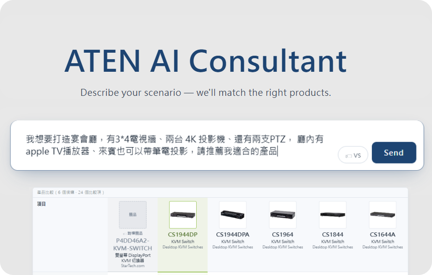
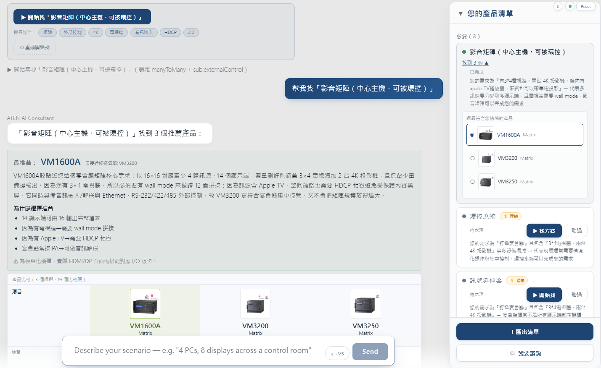
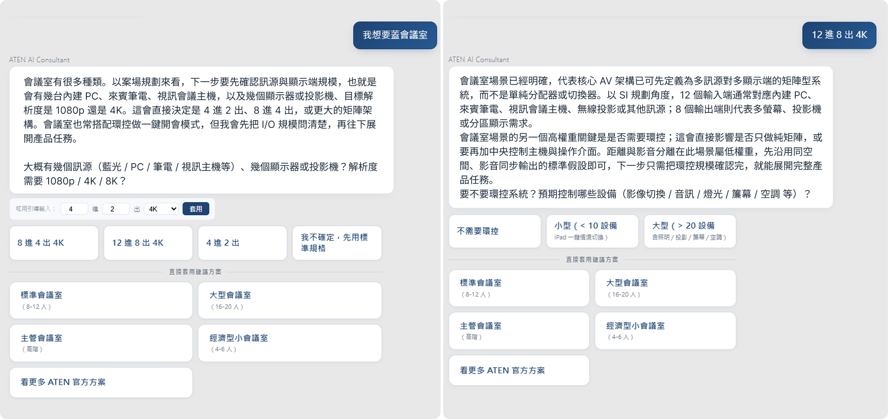
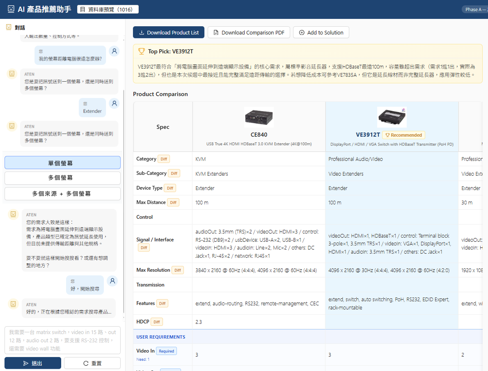
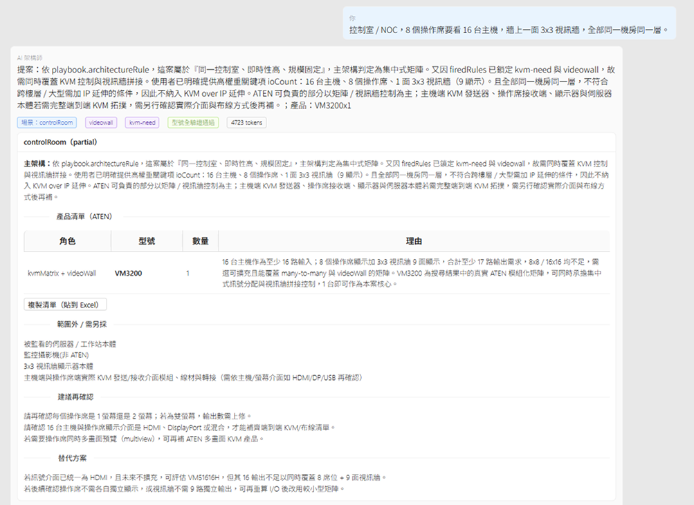

解決方案顧問 AI Agent
把 LLM
的不確定性放對位置
2026 - 現在
當推薦結果必須是真實、現役、規格正確的產品時，
LLM 的不確定性該被約束在哪裡？
這是從 Solution Builder 衍生出來的對話式 AI 產品顧問——既是服務內的推薦模組， 也是把使用者從官網導入這套服務的入口。使用者用自然語言描述需求 （「會議室要投影」「機房 17 台伺服器要集中管理」），系統從約 2,000 個真實 ATEN SKU 中推薦正確的產品。它經歷三代架構，答案從「全部鎖死」到「鎖決策、放翻譯」再到 「鎖事實、放判斷」——每一代都是上一代教訓的直接回應。
我的角色
對話體驗設計、產品語彙（Catalog）設計、Pipeline 架構與前後端實作、Prompt 工程
一個 UX 設計師把「對話體驗」和「讓它可靠的工程機制」當成同一件事設計——每個對話約束都對應一個機制，同一個人在同一張圖上畫出來
專案屬性
B2B AI Agent · LLM harness 設計 · 對話體驗 UX · 前後端實作

- 專案主體 Solution Builder B2B 視覺化提案工具，本系列的產品本體；另外兩個專案都為了支撐它而生。
- 對外入口 解決方案顧問 AI Agent 本篇 從 Builder 衍生的對話式 AI——既是服務內的產品顧問，也是把使用者從官網導入這套服務的入口。
- 對內地基 用 LLM 結構化產品資料 支撐前兩者的資料地基；一套內部 agent 式工具，把散落各處的產品規格整理成統一資料庫。
一句場景，換一張可落地的產品清單
系統整合商（SI）每接一個案子，要從約 2,000 個 ATEN 型號裡，湊出一套相容、現役、規格正確的方案—— 翻規格書、查 Excel、確認進出埠對得上，整段很花時間，也容易湊錯。 直接問通用 chatbot 更危險：它會編出聽起來合理但不存在的型號，或推薦已停產的產品。 這個模組要的是同一件事用講的就能完成，而且每個型號都保證真實。
你描述一個場景，它回你一張方案——主架構怎麼接、要哪些角色的產品、各幾台、為什麼選它； 資訊不足時它會像資深 SI 反問，而不是硬給答案。整張清單可以一鍵複製貼進 Excel， 或直接接到後面的比較表、畫布拉圖、BOM。
可以根據使用者需求產出產品清單，每個型號都過驗證閘確認真實存在。

使用流程：資訊夠就出方案，不夠才反問
反問與補答都在同一個對話裡完成——選項以 chips 呈現，點一下就補進需求，不必重打。

為什麼需要這個 agent，不直接接一個 ChatGPT（成熟 AI 公司的 Chatbot）
直接把產品資料塞給 LLM，會遇到兩個致命問題：
幻覺 SKU
LLM 會推薦「聽起來很合理但不存在」的型號，或已停產的產品。 對 B2B 銷售工具，推薦一個假型號等於信任歸零。
不可重現
同一個問題每次答案不同。SI（系統整合商）無法把「這次剛好答對」 當作工作流程的一部分。
但反過來「把 LLM 完全關進規則裡」也不行——這正是第一代的教訓。
核心命題：不確定性不是要歸零，而是要放對位置。 三代架構就是三次「畫邊界」的嘗試——換工程的講法，是三次為 LLM 設計 harness（約束、接地、驗證的鷹架）。
三次畫邊界的嘗試
填表員
翻譯官
推理主體
三代都在重畫同一條邊界——鎖死的範圍從「判斷」一路退到只剩「事實」，模型能自由發揮的空間反向放大。
第一代：固定填空
LLM 的角色：填表員
固定意圖管線，欄位、追問、流程全部寫死，LLM 只把使用者的話塞進固定欄位。
下場
安全但僵硬——又貴又慢，答得比通用大模型還差。現凍結為對照組。
第二代：標籤累積
LLM 的角色：翻譯官＋文案
LLM 只做「自然語言 ↔ 結構化標籤」的翻譯；下一步問什麼、何時輸出，由純函式決策引擎決定。
成果
窄查詢高效（一輪最多 2 次 LLM 呼叫），是目前的主力。但整案設計的組合窮舉不完。
第三代：兩道閘
LLM 的角色：推理主體
讓模型像資深 SI 整體推理，但從一道「事實閘」進場、從一道「驗證閘」離場。
成果
多設備整案設計：主架構判斷正確、實測零幻覺、成本降一個量級。
三套系統在程式庫內並存，刻意保留作為 A/B 對照。
把 LLM 全部鎖死的教訓
第一代把對話拆成固定管線：意圖路由 → 兩階段翻譯（先鎖設備類型、再依 Schema 補必填欄位）→ 追問品質決策 → 純 JS 搜尋 → 分析總結。LLM 在每一段只做「填空」， 欄位、追問上限、流程順序全部寫死。


為什麼不夠用
死板，像在填固定表單
三種固定意圖入口、欄位與追問全部寫死——使用者像在填表單，不像跟專家對談； 找現成解決方案模板時尤其明顯。
整案與單品是兩條分開的路
「找單一產品」和「找解決方案（房型模板）」各走各的， 沒辦法在一次對話裡自由湊出一張多樣產品的清單。
流程寫死
每加一個新場景，就要動整條流程。
教訓：把確定性套在「流程與判斷」上，使用者就被綁進固定表單—— 安全，但既不像專家對談，也湊不出一張自由的產品清單。問題不是「要不要約束」，是約束錯了對象。
決策不交給 LLM
第二代的邊界畫法：LLM 只做語言工作，所有決策由純函式做。
分工：翻譯官能「說」，決策引擎才能「做」
提問官 把決策指定的問題寫成追問句、附選項；補答後回到「翻譯官」重跑
六階段漏斗搜尋 排除 → 主功能交集 → 參數 → 副功能 → ioInterface → top 候選
資料源：產品 API（約 2,000 筆真實 ATEN，
/rest/product，快取 30 分鐘）左欄即分工：橘＝LLM 的語言工作，藍＝純函式的決策與事實。
這條主迴圈就是翻譯師 →（決策）→ 搜尋（吃產品 API）→ 分析師：兩端都是 LLM 的語言工作，中間的決策與篩選全是純函式。 LLM 永遠不決定流程走向——翻譯需求、撰寫追問、把候選寫成分析，僅此而已；決策、何時輸出、篩哪些產品，都由純函式定。
📚 所有專業知識，統一存放在「一份檔案」裡
不論餵給哪一代 AI、哪個功能，要載入的專業知識都集中在同一份結構化檔案（JSON）： 產品的主功能／附功能定義（什麼是矩陣、什麼是 HDCP，參數與別名）、案場資訊（各場景該問什麼、排除什麼）、 產業 know-how（硬性常識、架構準則、追問句）。
新增一個功能 = 改一筆 JSON，翻譯、決策、搜尋、追問自動跟上，不改程式碼、不改 Prompt—— 改一次、到處生效，不會出現兩邊知識對不上。而且這份檔案不必工程師維護： 附視覺化編輯器，PM、SI、產品線不會寫程式也能自己填、自己改。
Featurecatalog.json 知識主檔（單一事實來源）
feature-catalog-editor.html 給專業人士的視覺化編輯器
專業人士填的就是這些欄位——別名、追問參數、追問句。AI 從這份檔案讀、人也從同一份檔案改： 讓人和 AI 在同一份知識上協作，是這套系統真正的工作方式。

防幻覺：做成機制，不寫進 Prompt 叮嚀
選項只能來自真實值
追問的快速選項必須從「候選池實際存在的規格值」中挑—— LLM 不能推薦一個池子裡根本沒有的值。
幻覺值偵測
即使 LLM 推了不存在的值，純函式層會抓出來，轉成「放寬條件」的建議。
衝突解決不經過 LLM
歷史教訓：讓 LLM 自己編「兩個功能衝突時的選項」會幻覺。 改成直接從 Catalog 的場景例句抽選，LLM 完全不參與。
成本工程：一輪最多 2 次 LLM 呼叫
在 LLM 前面加三道前置路由，能不打模型就不打：
Fast Lane
純函式關鍵字命中「PM 已內化的場景 → 產品組合」，0 次 LLM 直接出清單。
輕量分類器
首輪判斷是否離題、命中哪個場景，讓 Prompt 只載入需要的部分。
Scenario Planner
場景命中、追問題池縮減、任務模板推導全部由純函式預先算好，LLM 只做自然語言抽取和寫文案。
侷限：為什麼還要第三代
整案設計的組合窮舉不完
窄查詢（「4 埠 4K 的 KVM 切換器」）這套做得很好；但整案設計（宴會廳：電視牆＋投影機＋攝影機＋來賓筆電＋中控）需要組合推理——事先把每一種任務組合都寫死成模板，維護量爆炸而且永遠寫不完。
每輪仍重塞知識庫，貴
就算把呼叫次數壓到一輪 2 次，每一次仍把整本產品知識庫塞給模型——成本大宗耗在重複輸入，隨對話輪數累積。
寫死的組合模板會悄悄過時
連自家測試範例都出錯：宴會廳的內建範例寫成「12 進 8 出」，真實需求其實是「4 進 14 出」。
這三點直接導向第三代。
把推理還給模型，用兩道閘夾住
第三代是一個標準的 agent harness：function-calling 的推理迴圈（工具上限 8 步）負責判斷， 進場一道事實閘、出場一道驗證閘負責接地——模型自由推理，事實面被夾死。
核心原則：決定論的邊界要畫對
要的不是「零變異」，是「有界變異」：事實鎖死，判斷放開。 隨機只留在「怎麼問、怎麼拼、怎麼寫」——那本來就該交給模型。
流程：一道事實閘進場，一道驗證閘離場
「宴會廳，3×4 電視牆、2 台 4K 投影機、Apple TV、來賓筆電」
Apple TV
→ 強制 HDCP；偵測 電視牆
→ 強制拼接牆能力機制保證的三個行為
這三件事是設計保證、不是測試結果——只要型號對不上真實搜尋，純函式就不放行。
擋虛構
清單出場前，每個型號逐一比對真實搜尋結果；對不上的整份退回重選——虛構型號、停產品出不了場。
誠實留白
某個角色找不到合適的真實產品時，不准硬湊——規則上只能改成追問，或標註「超出目前範圍」。
有理由的判斷
集中式 vs 分散式這類整體判斷交給 AI，但必須附上判斷理由與觸發了哪條規則——可檢視、可審。
維護的不是流程，是三種「知識積木」
硬性規則
X 一定 → Y，確定性觸發。
Apple TV / PS5 / 藍光 → HDCP 2.2；跨樓層 → 走 IP
場景劇本
該問什麼、排除什麼、主架構準則、需要哪些產品角色。
宴會廳：問規模與分布；排除 KVM；輸出 >9 或跨區 → 分散式
真實產品搜尋
與第二代共用同一支純函式搜尋，成為模型的工具——模型只能從搜尋結果選型。
第二代事先寫死的 14 套任務模板與 4 層設定合併，在這條路線整組刪除—— 養有限的積木，無限的組合交給模型現場拼。

實測結果（三場景 headless 驗證）
驗證閘不是理論——它真的擋下了幻覺
會議室場景第一輪，模型推薦了兩個不存在的型號，被驗證閘實測攔下； 修正後幻覺消失，三案全部以真實 SKU 收場。
誠實留白
搜不到就不編，改成問問題或誠實聲明「超出範圍」—— 行為像資深 SI，而不是硬要給答案的 Chatbot。
成本降一個量級
每案 3.7–4.9K token，對比第二代每輪約 58K，約省 6–15 倍（內部實測，同等級模型）。 還有第二層空間沒動：第三代知識集中成一份、提示前綴固定，天生對輸入快取友善—— 每案用量變小，重複的開頭再打一次折。
差距來自做法不同：第二代每輪把整本產品知識庫重塞給模型，第三代讓模型用工具去查、只回傳命中的候選。
額外紅利：多語言
第一代要支援 N 種語言，每句追問要翻 N 份維護；第三代的追問與方案敘述由模型用 使用者的語言即時生成，需要逐字精確的部分（法律免責、BOM 表頭）仍鎖既有翻譯。 架構選對，讓多語言從成本變成內建能力。
跨三代不變的四條原則
唯一交付物是「一張驗證過的產品清單」
比較表、畫布拉圖、BOM 匯出、配件推薦全部消費這張清單。 把 AI 的工作收斂成一件事，下游才接得穩。
知識放資料，不放 Prompt 散文
Catalog、劇本、硬規則都是結構化資料，可被翻譯、決策、搜尋三方共用； 寫進 Prompt 的知識只有模型「記得」時才存在。
確定性邏輯一律純函式
決策引擎、搜尋漏斗、題池縮減、拓樸推導都是無副作用的純函式—— 可單元測試、可重現、可在前端與 Node 之間移植。
幻覺用機制擋，不是用 LLM prompt 的叮嚀擋
三代裡所有有效的防幻覺手段，最後都長成機制——從第二代的幻覺值偵測，到第三代「不在搜尋結果就退回重選」的驗證閘，沒有一個靠 Prompt 措辭。
為什麼不乾脆叫使用者自己用通用模型
第一代的教訓裡藏著一個更尖銳的問題：如果通用大模型答得更完整，這個模組存在的理由是什麼？ 答案不在「我們的判斷比通用模型準」——判斷本來就不必百分之百準。要百分之百的是另外兩件事。
護城河是兩件通用模型給不了的事——產品內容百分之百正確，加上把清單接到落地的專用應用服務。 這也是為什麼三代都把唯一交付物收斂成一張驗證過的清單：它同時是工程約束，也是產品的立足點。
這為什麼是 UX 設計師的題目
純 ML 工程容易把目標訂成「模型答對」，忽略追問體驗—— 但 B2B 場景裡「問得像資深 SI」本身就是信任來源； 純 UX 知道對話該長怎樣，卻沒有設計 harness 的工程手段——不會「把判斷和事實分層」，只能靠 Prompt 措辭硬調。 這個模組裡，追問選項的設計、Catalog 的語彙設計、決策引擎的純函式邊界、Prompt 的角色卸載， 是同一個人在同一張圖上畫出來的——對話體驗的每個約束，直接對應一個工程機制。 harness 設計到哪，對話體驗就設計到哪，反之亦然。
現況
第一代凍結為 A/B 對照組，第二代是目前 DEMO 與窄查詢主力， 第三代完成核心驗證與前後端串接（多輪追問、BOM 複製、推理步驟可視化）。 目前的天花板是產品標籤覆蓋率（約三成場景已覆蓋），不是架構—— 下一步是補齊缺口產品家族的標籤，再用真實案例做盲測 A/B。
文中 token 與時間數字為內部開發實測，僅供量級參考。
拿到清單之後，使用者的旅程才開始
AI 的唯一交付物是「一張驗證過的產品清單」。但對使用者，拿到清單才是開始—— 後面這些不交給 AI：它們是確定性的服務流程，由產品資料直接驅動、不會出錯，也是接下來要設計的部分。
完整體驗動線
對話框負責前段（收斂需求、產出清單）最有價值；後段的細看、替換、配件挑選，交給既有的瀏覽介面體驗更好——這正是設計團隊可以著力的地方。
清單之後的流程框架（非 AI・待設計）
清單定案後，依產品資料自動帶出對應的線材、子卡、加購選項——規則對照，不必 AI 猜。
保固、認證等購買決策需要的資訊，直接從產品庫帶入清單——快，而且保證正確。
從對話無縫轉入 Builder，接續畫圖、編輯、報價等更深度的服務。
專用應用服務：兩條路線
① 對話框直接提供服務
在對話中就拿到「看得到、帶得走」的產出
AI 直接畫出連線圖
Builder 開放編輯能力給 AI，直接把方案畫成 render 好的連線圖。
對話中直接產出 BOM 報表
串接 Builder 的 BOM 生成，當場產出 PDF 與 Excel。
串接 Salesforce
方案與需求資料流進 CRM，業務可直接跟進。
② 引流進 Builder
把對話成果變成進 Builder 的理由
產品清單一鍵帶進 Builder 編輯
把 AI 產出的清單直接丟進 Builder，立即體驗編輯，或畫完想法直接諮詢。
依清單帶出 Builder 小工具
依清單提供產品／子卡／Audio 選擇器、VK 計算器。Audio、VK 這類邏輯性選擇，用工具比用 AI 更合適。
約束放對位置，模型才能發揮
這個模組最大的收穫是一條邊界原則：事實鎖死、判斷放開。 第一代把流程也鎖死，換來一台死板的填表機器；第三代只鎖事實，推理能力回來了，幻覺仍被兩道閘擋在門外。 對所有要把 LLM 放進嚴肅產品的團隊，「不確定性放在哪」都是第一個要回答的設計題—— 而能把它當成「對話體驗與 harness 的同一道題」來解的，正是 UX 設計師可以站上的位置。